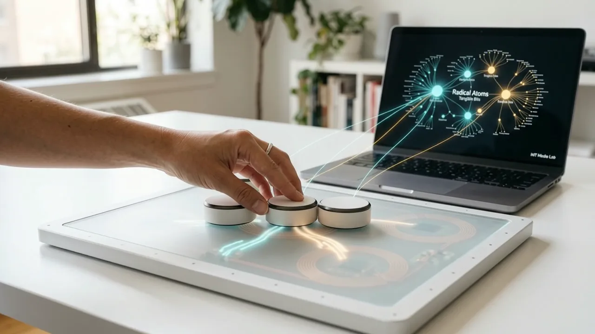
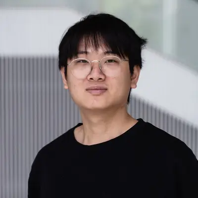
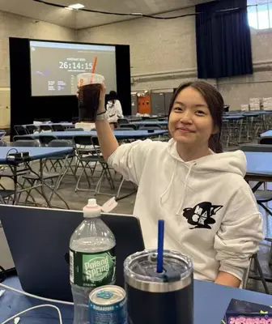

Papershop
Draw on paper, point, and speak. The desk is the editor.

Interacting with AI should feel like a breath of fresh air.
Why can't we grasp an agent and steer it in real time?
We are tired of screens, chat bots, and endless prompting.
We are working to increase the speed and bandwidth of human–machine interaction by 100× — without brain–computer interfaces.
We want to help people achieve more by thinking more, intending more, acting more, and aspiring more.
Part of the Tangible Media Group, led by Prof. Hiroshi Ishii, bridging digital and physical worlds for 30+ years.
Handles for ideas. A slider bound to “more poetic.” One puck per idea in a brainstorm. The output changes as you move them.
Draw on paper, point, and speak. The desk is the editor.

One puck per idea. Pull, push, flip, turn.

All our complex lives all at once.

LLMs at 60 frames per second.






Recruiting UROPs for IAP + Spring 2027. Bring something you can contribute and an appetite for learning the rest. 8+ hours a week.
Read the opening →